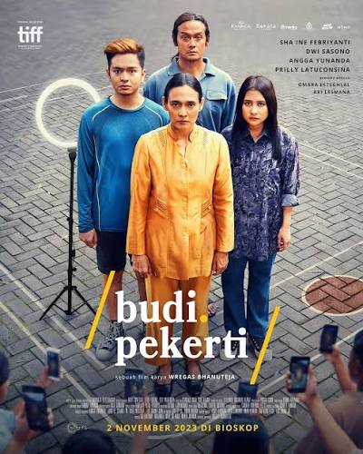
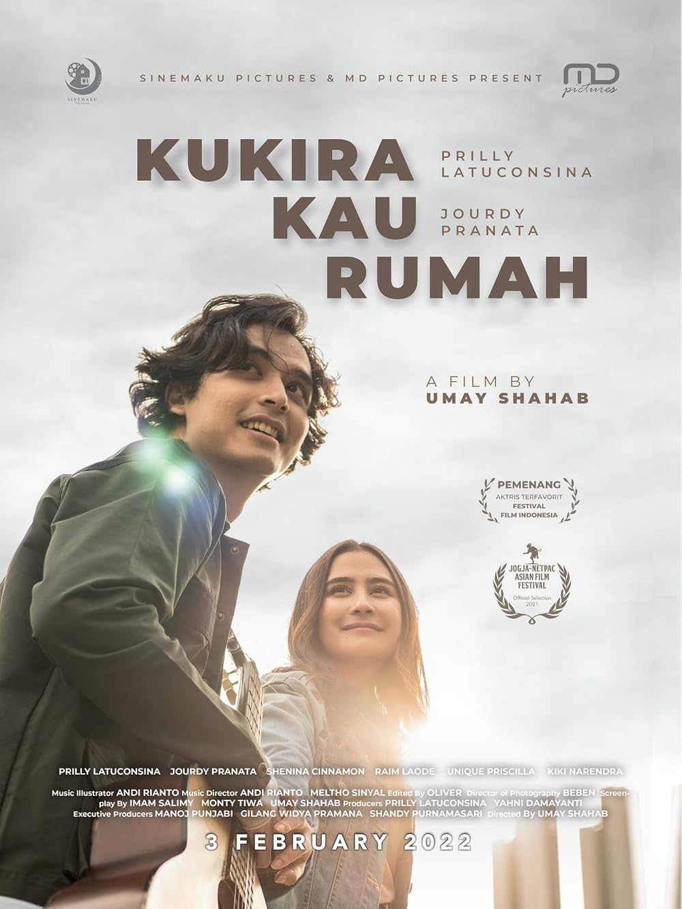
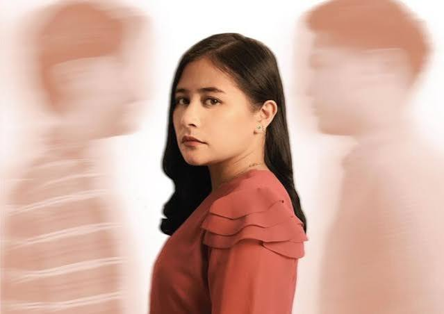
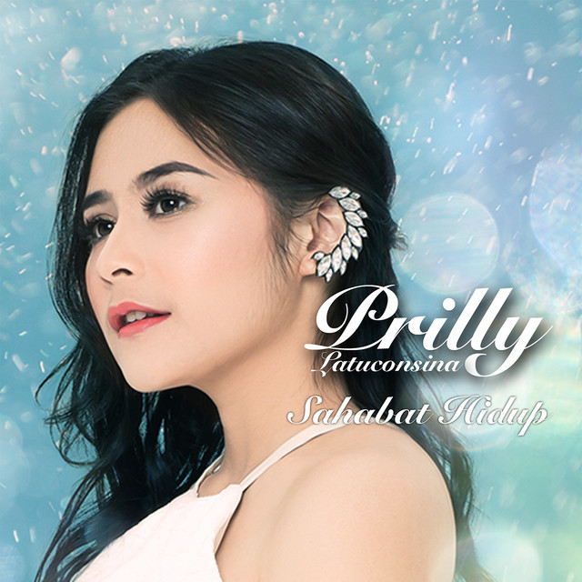
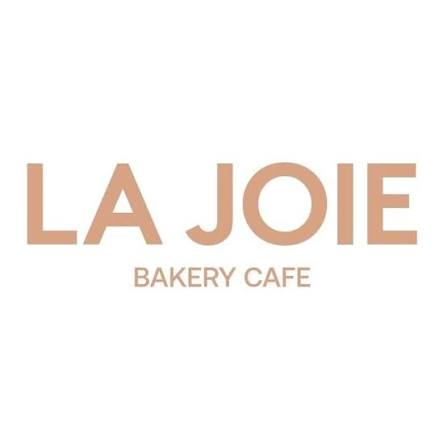
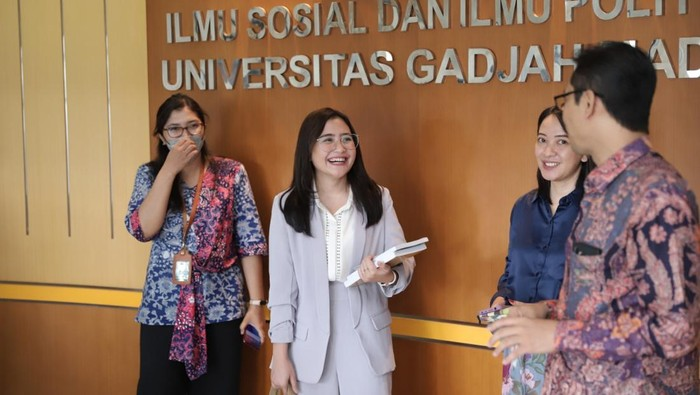

FILMBudi Pekerti (Andragogy)
Memerankan musisi muda independen yang berjuang membela martabat ibunya di tengah gelombang perundungan massal media sosial.
A collection of selected works, projects, and creative journey in film, production, music, and business.

FILMMemerankan musisi muda independen yang berjuang membela martabat ibunya di tengah gelombang perundungan massal media sosial.

PRODUCTIONKarya perdana Sinemaku Pictures yang mengangkat isu kesehatan mental (bipolar disorder). Salah satu film Indonesia terlaris pasca-pandemi.
 FILM
FILM
Mengeksplorasi tema kehilangan, duka mendalam, dan teknologi kacamata AI masa depan dalam menemukan penerimaan diri.
Memimpin perancangan proyek film, pendanaan eksekutif, dan kemitraan strategis dengan sutradara muda berbakat Indonesia.

SERIESSerial orisinal berformat episodik yang menyoroti pergulatan batin antara cinta, nilai keluarga, dan kenyataan hidup di kota metropolitan.

MUSICEksplorasi musikal Prilly dalam menyampaikan harmoni vokal lembut yang menceritakan makna persahabatan sejati dan ketulusan hati.

BUSINESSMenghadirkan pengalaman cita rasa kue dan roti premium ala Prancis. Prilly mengawal konsep cita rasa, pemasaran, dan standardisasi kualitas.

EDUCATIONMenghubungkan teori akademik komunikasi massa dengan studi kasus riil manajemen krisis reputasi dan dinamika industri hiburan modern.
Pelajari riwayat pendidikan wisudawan terbaik LSPR, linimasa pengalaman, matriks keterampilan, dan daftar penghargaan publik.